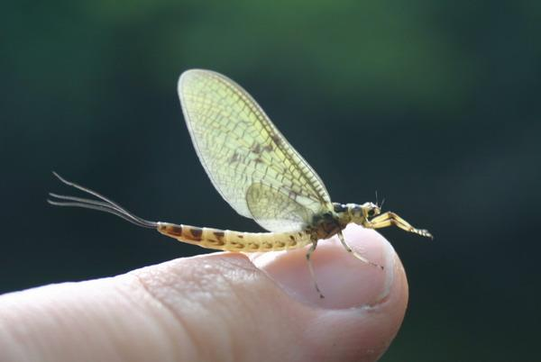
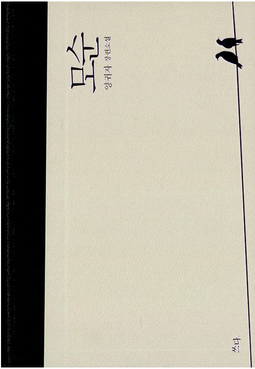

"Ideal human is a
mayfly, I'd like to say. Because he(she) dies every night, and reborns
every morning."

About Mayfly
하루살이라는 이름은 꽤나 문학적이다. 영문이름인 Mayfly도 마찬가지이다.
학명인 "Ephemeropetra"는 그리스어에서 기원하였는데, 'living a day'라는
뜻을 가지고 있다.
성체 하루살이는 1~3일동안 생존하는데, 입이 퇴화되어서 굶어 죽는 것이다.
살아있는 기간 동안에는 번식활동을 한다.
The korean name 하루살이 is quite literary. Same for the English name
Mayfly. Its technical name "Ephemeropetra" originated from Greek word
meaning 'living a day'.
Adult Mayfly lives about 1~3 days, beacuse its mouth is degenerated,
starve to death. They reproduce while alive.
양귀자, <모순>

양귀자의 소설 <모순>에서 주인공 안진진의 어머니는 고된 하루하루를
보낸다. 소설 속 그녀는 "날마다 쓰러지고, 날마다 태어난다".
죽을듯이 잠에 들지만, 다음 날 기적처럼 깨어나 굳건히 살아가는 것이다.
In Guija Yang's novel <모순>, the mother of 안진진(heroine) lives
really tough days. She "falls every day, borns every day". She
falls asleep like dying, but awakes like miracle and live firmly.
 Their Quotes
Their Quotes